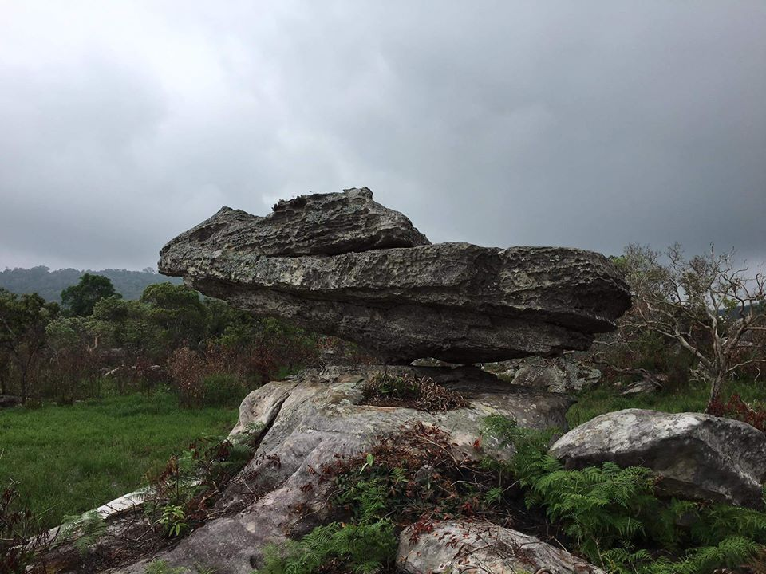

ภูคิ้ง ตั้งอยู่ที่บ้านโนนหนองไฮ ตำบลโนนทอง บนยอดเขาเขียว มีความสูง 1,167 เมตร จากระดับน้ำทะเลสูงเป็นอันดับของภาคอีสาน อยู่ในเขตรักษาพันธุ์สัตว์ป่าภูเขียว มีอากาศหนาวเย็นตลอดปี เป็นแหล่งกำเนิดของดอกไม้ป่าและกล้วยไม้นานาชาติ ทิศเหนือเป็นหน้าผาสูงชันสามารถมองเห็นทัศนียภาพของภูกระดึง ภูแลนคา เขื่อนห้วยกุ่ม และลำน้ำพรม ภูคิ้ง มีลักษณะเป็นภูเขาหินที่มีความสูงที่สุดของป่าภูเขียวซึ่งได้ชื่อว่าเป็นมรดกเม็ดงามแห่งอีสานใต้ มีความสูงถึง 1,214 เมตร จากระดับน้ำทะเล สูงเป็นอันดับ 5 ของยอดเขาในภาคอีสาน รองจากภูหลวง ภูเรือ เขาแหลมและภูกระดึงตามลำดับ ด้านหนึ่งเป็นภูผาสูงที่ให้มุมมองไกลสุดตา มีลานหินกว้างยื่นมาจากหน้าผา สามารถมองเห็นเขื่อนห้วยกุ่ม ภูกระดึง ภูแลนคา ภูเวียง หากมองลงตรงหุบเขาแคบ ๆ ด้านล่างจะเห็นทุ่งนา ไร่สวน เขื่อน อ่างเก็บน้ำ แหล่งท่องเที่ยวที่น่าสนใจบนภูคิ้ง ได้แก่ แหลหินเงิบ เป็นหินขนาดใหญ่ซ้อนทับกันคล้ายหินเพิงหมาแหงนบนลานหิน ห่างจากยอดภูคิ้งไปทางทิศตะวันตกประมาณ 2 กิโลเมตร บริเวณโดยรอบจะพบหม้อข้าวหม้อแกงลิง